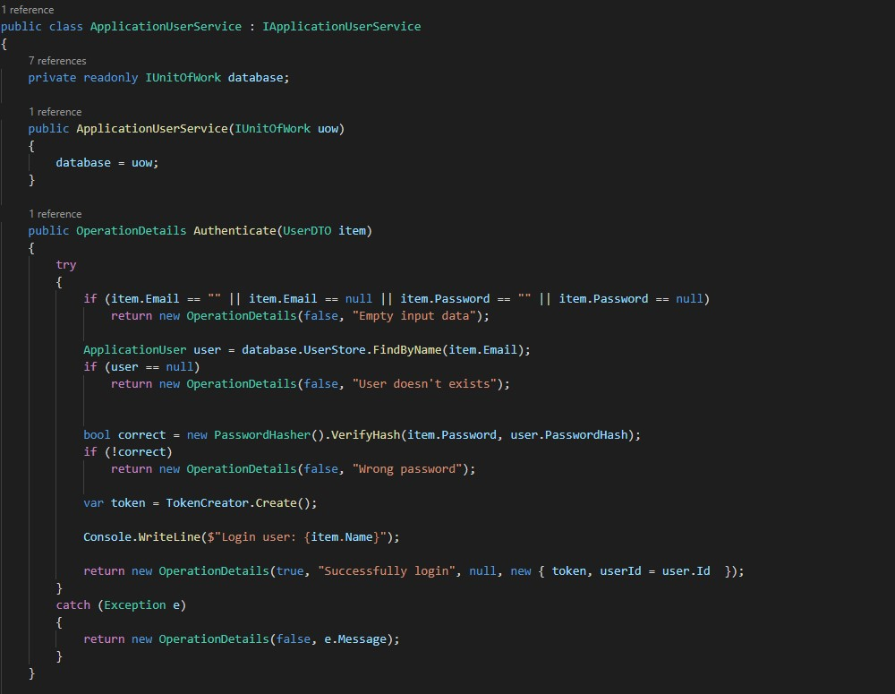

Тема: ВИКОРИСТАННЯ ВЛАСТИВОСТЕЙ. АВТОМАТИЧНІ ВЛАСТИВОСТІ. СКОРОЧЕНИЙ ЗАПИС ВЛАСТИВОСТЕЙ
Мета: Здійснити введення та виведення даних закритих полів класів, застосовуючі методи-властивості.
- Постановка задачі:
- 1. Доповнити програмну реалізацію класів методами-властивостями класів, введення та виведення даних закритих полів класів.
- 2. Протестувати програму, шляхом запуску програми, введенням та виведенням значень закритих полів.
Класи та методи-властивості
Місце розташування проекту: посилання.
Середовище розробки: в ході реалізації проекту в основому використовуються дві програми - Visual Studio 2019 та Visual Studio Code.
Діаграма класів

Файлова структура проекту
Програмний код файлів проекту
CommentService
PostService
UserProfileService
ApplicationUserService
Результат виконання програми
Висновок
В ході виконання даної лабораторної роботи я закріпив свої знання в роботі з методами-властивостями. Головною перевагою даного способо відносно звичайного присвоєння значень екземпляру класу є те, що через дані методи-властивості можна добавити додаткову логіку, що деколи може бути крайнє необхідно. Якщо ж ви поки не впевненні, чи потрібні вам подібна додаткова логіка, чи ні, то слід добавити автоматичні властивості. Вони за замовчуванням функціонально подібні до звичайних полів, за винятком того, що в будь-який момент можна буде добавити додаткову логіку.